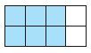
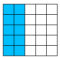
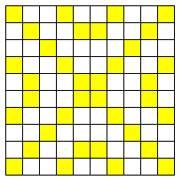

Decide whether the fraction is more or less than one-tenth. Show how you decided.
The tax on a $68 purchase was $5.78. Is that more or less than one-tenth of the price?
Randall has plowed 11 acres of his 80-acre corn field. Is that more or less than one-tenth of the field?
The Wildlife Conservancy tagged 23 of the 312 geese at Blue Lake. Is that more or less than one-tenth of the geese?
Gregor paid $4500 towards his $30,000 student loan. Is that more or less than one-tenth of the amount he owes?
Subsection1.2.2Fractions in Tenths
One-tenth is a relatively small fraction. How do tenths compare to the benchmark fractions \(\dfrac{1}{2}~\text{,}\)\(\dfrac{1}{4}~\text{,}\) and \(\dfrac{3}{4}~\text{?}\)
Checkpoint1.2.3.
On the figure below, draw lines at \(\dfrac{1}{2}~\text{,}\)\(\dfrac{1}{4}~\text{,}\) and \(\dfrac{3}{4}~\) and label them.
Which is larger, \(\dfrac{1}{4}~\) or \(\dfrac{3}{10}~\text{?}\)
Which is larger, \(\dfrac{3}{4}~\) or \(\dfrac{6}{10}~\text{?}\)
If you can find one-tenth of an amount, you can find two-tenths, or three-tenths, and so on. Remember that \(\dfrac{2}{10}~\) can also be written as 0.2, \(\dfrac{3}{10}~\) can also be written as 0.3, and so on.
Example1.2.4.
Of the 3200 students who commute at Lakeview College, 0.4 take the bus. How many students take the bus?
In the Examples above, what do you notice about dividing a number by 10?
Activity1.2.2.Tenths.
Find the fraction. Show your work.
A new section of county road will be 18 miles long. The road crew has completed 0.3 of the road. How long is the completed portion?
The average annual rainfall in Salem County is 39 inches. This year only 0.8 of that amount of rain fell. How many inches of rain fell this year?
Caroline spends $2400 a month, or 0.6 of her income, on food and rent.
What is one-tenth of Caroline's monthly income?
What is Caroline's monthly income?
Radio station KWHY collected $4760 in the first week of their 10-day pledge drive. If they maintain the same level of support, how much can they expect to make by the end of the pledge drive?
Subsection1.2.3Tenths and Fifths, Reducing Fractions
Perhaps you have noticed that \(\dfrac{2}{10}~\text{,}\)\(\dfrac{4}{10}~\text{,}\)\(\dfrac{6}{10}~\text{,}\) and \(\dfrac{8}{10}~\) can all be written with denominator 5.
Checkpoint1.2.6.
On the figure below, draw lines at \(\dfrac{1}{2}~\text{,}\)\(\dfrac{1}{4}~\text{,}\) and \(\dfrac{3}{4}~\) and label them.
Which is larger, \(\dfrac{1}{4}~\) or \(\dfrac{3}{10}~\text{?}\)
Which is larger, \(\dfrac{3}{4}~\) or \(\dfrac{6}{10}~\text{?}\)
When we rewrite a fraction with a smaller denominator (but so that the size of the fraction stays the same), we say that we have reduced the fraction.
Definition.
To reduce a fraction, we rewrite it as an equivalent fraction with a smaller denominator.
For example, the fraction \(\dfrac{4}{10}~\) can be reduced to \(\dfrac{2}{5}~\text{.}\) You can see that these two fractions are equivalent — that is, they name the same portion of one whole.
We can reduce \(\dfrac{4}{10}~\) because both the numerator are the denominator are divisible by 2.
Here is a picture of a spider on a circle. If we start at the top of the circle, at 0°, and travel once clockwise all the way around the circle, we turn through a rotation of 360°. Each of the spider's legs intersects the circle at a fraction of one complete rotation. Name the fraction at each leg, and reduce it if possible.
What is one-tenth of one-tenth? One-tenth of one-tenth is one-hundredth, or \(\dfrac{1}{100}~\text{.}\) In decimal form, we write \(\dfrac{1}{100}~\) as 0.01, with the 1 in the second decimal place, or hundredths place.
Compare each decimal fraction to the closest familiar common fraction from the previous Exercise. Is it larger or smaller than the familiar fraction?
Of all registered voters in the county, 0.63 turned out for the election.
Megacorps finds that on any given day, 0.17 of their employees are absent.
Among single-parent families, 0.27 live in poverty.
The United States spends 0.48 of the amount spent on the military world-wide.
Subsection1.2.5Decimal Form
We can find the decimal form for any fraction by dividing the denominator into the numerator. Remember that the fraction bar is really a division symbol. For instance, \(\dfrac{1}{4}~\) means "divide one whole into four equal parts, and take one part." You can use a calculator to check the decimal forms of our benchmark fractions.
For Problems 1-8, use the 10 by 10 grids provided.
1.
Shade 0.03.
Shade 0.30.
2.
Shade 0.75.
Shade 0.075.
3.
Shade 0.1.
Shade half of 0.1. What fraction is that?
4.
Shade 0.7.
Shade half of 0.7. What fraction is that?
5.
Shade 0.4.
Shade \(\dfrac{1}{4}\text{.}\)
6.
Shade 0.2.
Shade \(\dfrac{2}{5}\text{.}\)
7.
Shade \(\dfrac{1}{20}\text{.}\)
Shade 0.05.
8.
Shade 0.9.
Shade 0.99.
9.
Explain why 0.1 is the same as 0.10.
Explain why 0.10 is not the same as 0.01.
10.
A classmate says that since 0.10 equals \(\dfrac{1}{10}\text{,}\) it must be true that 0.20 equals \(\dfrac{1}{20}\text{.}\) What do you think? Explain.
Problems 11-12 are true stories.
11.
Kathy asks for 4 ounces of roast turkey at the deli counter, but the clerk tells her that the scale only measures in pounds. How should Kathy rephrase her order?
Kathy then asks for a fraction of a pound (instead of 4 ounces), but the clerk says that the scale only measures in decimal fractions. Now what should Kathy ask for?
12.
Bob's mechanic says he knows that a \(\dfrac{7}{8}\) wrench is bigger than a \(\dfrac{3}{4}\) wrench because 78 is bigger than 34. Will the mechanic's method always work? Give an example.
Exercise Group.
For Problems 13-16, decide whether the fraction described is more or less than the given fraction. Show how you decided.
13.
Tolstoy's War and Peace is 1440 pages long. Mandy has finished 150 pages. Is that more or less than \(\dfrac{1}{10}\) of the book?
14.
A medium Caramel Mocha has 330 calories. Is that more or less than \(\dfrac{1}{5}\) of a 1400 calorie diet?
15.
The reflecting pool at the Washington monument is 2029 feet long. Is that more or less than \(\dfrac{2}{5}\) of a mile? (How many feet are in a mile?)
16.
Peter picked 12 ounces of blueberries. Is that more or less than \(\dfrac{7}{10}\) of a pound? (How many ounces are in a pound?)
Exercise Group.
For Problems 17-20, show your work.
17.
A standard glass of wine is one-fifth of a 750 ml bottle.
How much wine is in half a glass?
What fraction of a bottle of wine is half a glass?
18.
Baker's chocolate comes in one-half ounce squares. Cora's recipe calls for 2.5 ounces of chocolate.
How many squares of baker's chocolate does she need?
Cora has a one-ounce square of unsweetened chocolate. What fraction of her recipe would that provide?
19.
Noreen has saved $380, which is 0.2 of the amount she needs for a new washer and dryer. Her dad has offered to loan her half of the cost of the appliances. How much will he contribute?
20.
According to the New York Times, in 2013, one-sixth of China's farmland, or about 50 million acres, was polluted by cadmium and other industrial waste. In 2014, the fraction of polluted farmland had increased to one-fifth. How many acres were polluted in 2014?
Exercise Group.
We can reduce a fraction if we can arrange the shaded and unshaded pieces into larger groups of equal size. For example, to reduce \(\dfrac{12}{20}\) we form groups of four pieces each:
For Problems 21-26, use the diagram to help you reduce the fraction.
21.
\(\dfrac{3}{6} = \fillinmath{XXXXXXXX}\)
22.
\(\dfrac{6}{8} = \fillinmath{XXXXXXXX}\)

23.
\(\dfrac{2}{8} = \fillinmath{XXXXXXXX}\)
24.
\(\dfrac{12}{15} = \fillinmath{XXXXXXXX}\)
25.
\(\dfrac{8}{16} = \fillinmath{XXXXXXXX}\)
26.
\(\dfrac{10}{25} = \fillinmath{XXXXXXXX}\)

Exercise Group.
For Problems 27-30, the grid has 10 rows and 10 columns. What fraction of the grid is shaded? Reduce your answer if possible.
27.
\(\dfrac{2}{8} = \fillinmath{XXXXXXXX}\)
28.
\(\dfrac{12}{15} = \fillinmath{XXXXXXXX}\)
29.
\(\dfrac{8}{16} = \fillinmath{XXXXXXXX}\)
30.
\(\dfrac{10}{25} = \fillinmath{XXXXXXXX}\)

Exercise Group.
For Problems 31-38, reduce the fraction if possible.
31.
\(\dfrac{8}{12}\)
32.
\(\dfrac{14}{20}\)
33.
\(\dfrac{12}{15}\)
34.
\(\dfrac{6}{16}\)
35.
\(\dfrac{10}{18}\)
36.
\(\dfrac{18}{24}\)
37.
\(\dfrac{36}{40}\)
38.
\(\dfrac{15}{25}\)
39.
What does it mean for two fractions to be equivalent?
40.
Explain why the fractions \(\dfrac{3}{10}\) and \(\dfrac{7}{10}\) cannot be reduced.
41.
Why is a 25-cent coin called a quarter?
42.
How many decades are there in a century?
43.
Delbert's niece is 2 years 9 months old. Delbert says that is the same as 2.9 years old. Is he correct? Why or why not?
44.
Francine's younger sister claims that 0.4 is the same as \(\dfrac{1}{4}\text{,}\) and that 0.6 means \(\dfrac{1}{6}\text{.}\) Do you agree? Why or why not?
45.
On the number line below, place a dot at all halves, fourths, and fifths, and label each.
46.
On the number line below, label each tick mark with a decimal fraction.
Exercise Group.
For Problems 47-50, write each fraction as an equivalent fraction in hundredths.
47.
\(\dfrac{1}{4},~\dfrac{1}{2}\) and \(\dfrac{3}{4}\)
48.
\(\dfrac{1}{5},~\dfrac{2}{5},~\dfrac{3}{5}\) and \(\dfrac{4}{5}\)
49.
\(\dfrac{1}{10},~\dfrac{3}{10},~\dfrac{7}{10}\) and \(\dfrac{9}{10}\)
50.
Explain how you know that \(\dfrac{4}{5}\) of one whole is bigger than \(\dfrac{3}{4}\) of one whole.
51.
On the number line below, mark and label the decimal fractions located half-way between each pair of tick marks.
In the first row of the table below, write as a common fraction each of the decimal fractions you labeled in part (a). In the second row, reduce the fraction if possible.
Fraction in Hundredths
\(\hphantom{000}\)
\(\hphantom{000}\)
\(\hphantom{000}\)
\(\hphantom{000}\)
\(\hphantom{000}\)
\(\hphantom{000}\)
\(\hphantom{000}\)
\(\hphantom{000}\)
\(\hphantom{000}\)
\(\hphantom{000}\)
Reduced Fraction
52.
What is one-half of 0.10? (Hint: Read the fraction aloud.)
Write your answer to part (a) as a common fraction.
Reduce your answer to part (b) if possible.
What is one-half of 0.1?
53.
Is it true that 10 times 0.10 is equal to 0.100? Why or why not?
54.
Explain why it makes sense that \(\dfrac{1}{20}\) is half of \(\dfrac{1}{10}\text{.}\) (Hint: Think about what the denominator tells us.)
55.
List all the fractions (between 0 and 1) with denominator 20 that cannot be reduced.
56.
Which of the following numbers are equal to one-tenth?
Which of the following numbers are equal to one-hundredth?